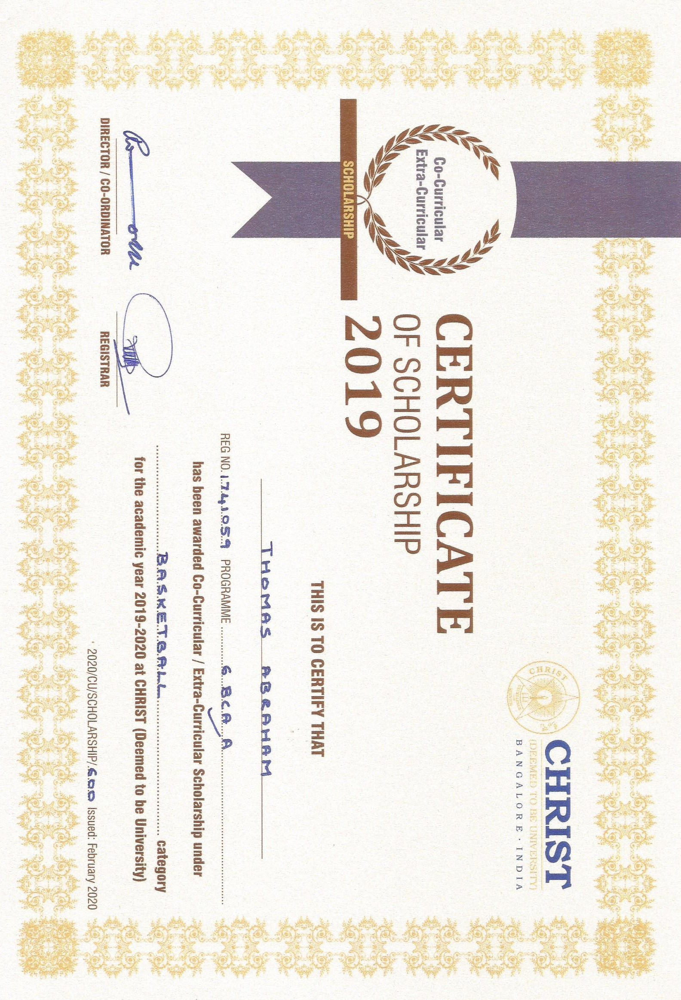

Summary
A computer science and basketball enthusiast focused on honing my skills and enhancing my technical abilities as a Quality Assurance professional. As an individual I am adaptable and always looking to work with new technology.
Information
Name: Thomas Abraham
Date Of Birth: 19/04/1999
Nationality: Indian
Skills
Manual Testing
Test Automation
API Testing
Regression Testing
Agile Methodologies
Gherkin
SQL
Tools
Postman
SoapUI
GitLab
GitHub
Charles Proxy
Puppeteer
Microsoft SQL Server
Python
Microsoft Office
Work Experience
FX Digital OCT 2022 - PRESENT
London, United Kingdom
Projects:
1. Tennis TV (ATP Media)
- Daily activites included deploying builds and executing multiple tests on CDTV devices (i.e. Apple TV, Samsung, LG, Xbox, AFTV and Android TV) of various years (2017-2023).
- Automated scripts were also written in Gherkin to then be executed using an in house automation framework based on Puppeteer. Test cases could be executed directly on the device or on a browser and the results were uploaded to TestRail using a script.
2. itvX (CDTV)
- Assigned to various Back End teams as an internal QA with primary focus on the Video Player.
- Regular tasks involved deploying builds and running multiple tests on CDTV and OTT devices (i.e. AFTV, Samsung, Freeview Play devices, Youview devices, etc.) of various years (2018-2023).
- Multiple feature requests and internal changes were completed where a comprehensive knowledge of interrogation tools were required.
Deloitte India (Offices of the United States) AUG 2020 - AUG 2021
Mumbai, Maharashtra, India
Project: Government and Public Services
- Assigned to this project as a functional and operational software tester.
- Daily activities included scripting of high-level scenarios, execution of test cases, API testing, logging defects and working with developers to better understand new change requests and increase client satisfaction.
- Deloitte certification course was undertaken for proficiency in Integrated Eligibility.
Education
Queen Mary University of London (United Kingdom) SEPT 2021 - SEPT 2022
Master of Computer Science
- Key Coursework: Functional Programming in Haskell, XSLT, XML, XQuery, Logic in Computer Science, Risk Analysis and Machine Learning.
- Dissertation was submitted where machine learning algorithms was utilized to accurately predict the end result of an NBA season. Code & documentation can be found here.
CHRIST University, Bangalore (India) JUNE 2017 - JULY 2020
Bachelor of Computer Application
- Key Coursework: C, C++, Java, Advanced Computational Algebra, Discrete Mathematics, Operating Systems, Data Structures and Algorithms, DBMS & Computer Networks.
- In partial fulfillments of the course, a project was undertaken in which a mobile application was developed using Android Studio and Firebase. Code & documentation can be found here.
Achievements
-
- Received a scholarshipfor participation in the university basketball team at the undergraduate level.
-
- Participated in Samarthan Trust Campaign to create audio books for disabled children as part of a Deloitte initiative.